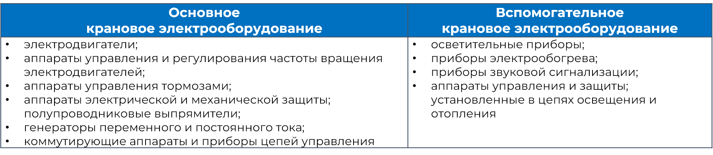

Крановое электрооборудование

Электрооборудование грузоподъемных кранов работает в двух режимах:
- повторно-кратковременном режиме работы;
- режиме реверса.
Повторно-кратковременный режим работы характерен для электродвигателей (режим S3), при в этом режиме двигатель не успевает нагреться до установившейся температуры в течение рабочего периода и не успевает остыть до температуры окружающей среды во время паузы.
Перемена направления вращения электродвигателя получила название «реверс». Реверс достигается путем изменения полярности питающего напряжения, которое подается на пускатель.
Для электродвигателей постоянного тока используются регуляторы. Реверс осуществляется путем изменения последовательности фаз в сети переменного тока. Изменение фаз выполняется автоматически путем изменения полярности задающего сигнала или путем подачи команды на соответствующий логический вход. При работе в режиме реверса или повторно-кратковременном режиме работы необходимо регулировать частоту вращения привода.
Для башенных кранов характерна работа в условиях загрязненности, влажности, значительного перепада температур. Крановое электрооборудование работает при значительных перегрузках и в условиях вибрации.
По этим причинам электрооборудование должно обладать повышенной прочностью, усиленной изоляцией и защитой от воздействия окружающей среды.
Электрооборудование выпускается в специальном крановом исполнении.
Однако на некоторых кранах возможно применение электрооборудования общего исполнения.